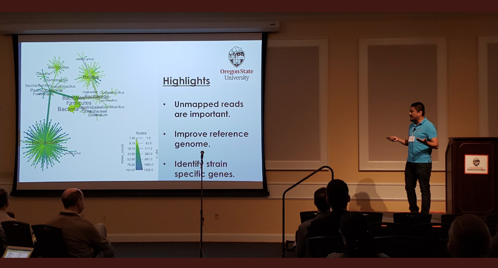

I started my first postdoctoral position in Dec, 2019 at Oregon State University.
I travelled to Nepal in November to teach a “Population genetics and data analysis in R programming language workshop”. This workshop was funded by American Phytopathological Society and Oregon State University.
I successfully defended my Ph.D. in October, 2019.
I attended the annual Phytopathological Society meeting 2019 in August in Cleveland, OH. This year’s theme was sow, know and grow. I presented a poster on reference bias in Phytophthora infestans. You can find the abstract here and poster here
Read our recent publication about copy number variation in late blight pathogen Phytophthora infestans here.
I received College of agriculture sciences Global experience fund from Oregon State University to teach a workshop in Nepal.
I received Global experience program award from American Phytopathological Society (APS) Office of international programs (OIP). This award will be used to conduct a 3 day workshop on population genetics and data analyses in R programming language in Nepal.
I am now one of the elife ambassdors for 2019.
I presented a lighting talk “What’s in your unmapped reads?” in CGRB spring conference at Oregon State University.
